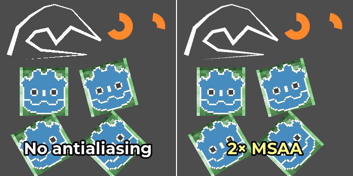
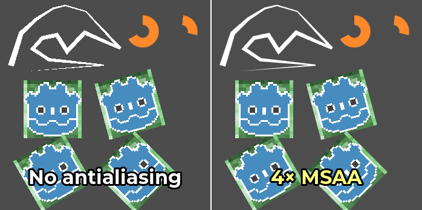

Khử răng cưa 2D
Xem thêm
Godot cũng hỗ trợ khử răng cưa (antialiasing) trong kết xuất 3D. Nội dung này được đề cập ở trang Khử răng cưa 3D.
Giới thiệu
Do độ phân giải giới hạn, các scene được kết xuất 2D có thể xuất hiện hiện tượng răng cưa (aliasing). Các hiện tượng này thường biểu hiện dưới dạng hiệu ứng "bậc thang" trên các cạnh hình học, và dễ thấy nhất khi dùng các node như class_Line2D, class_Polygon2D hoặc class_TextureProgressBar. Vẽ tùy chỉnh trong 2D cũng có thể bị răng cưa với các phương thức không hỗ trợ khử răng cưa.
Trong ví dụ dưới đây, bạn có thể thấy các cạnh trông lởm chởm như thế nào:

Hình ảnh được phóng to 2× với bộ lọc nearest-neighbor để hiện tượng răng cưa dễ thấy hơn.
Để khắc phục điều này, Godot hỗ trợ một số phương pháp bật khử răng cưa cho kết xuất 2D.
Thuộc tính khử răng cưa trong Line2D và vẽ tùy chỉnh
Đây là phương pháp được khuyến nghị, vì trong hầu hết trường hợp nó ít ảnh hưởng đến hiệu năng hơn.
Line2D có thuộc tính Antialiased mà bạn có thể bật trong Inspector. Ngoài ra, một số phương thức của Vẽ tùy chỉnh trong 2D hỗ trợ tham số tùy chọn antialiased, có thể đặt thành true khi gọi hàm.
Các phương pháp này không yêu cầu bật MSAA, nên chi phí hiệu năng cơ bản của chúng thấp. Nói cách khác, sẽ không có chi phí phát sinh cố định nào nếu tại một thời điểm bạn không vẽ hình học nào có khử răng cưa.
Nhược điểm của các phương pháp khử răng cưa này là chúng hoạt động bằng cách sinh thêm hình học. Nếu bạn sinh hình học 2D phức tạp được cập nhật mỗi frame, đây có thể trở thành điểm nghẽn. Ngoài ra, Polygon2D, TextureProgressBar và một số phương thức vẽ tùy chỉnh không có thuộc tính khử răng cưa. Với các node này, bạn có thể dùng khử răng cưa đa mẫu (multisample antialiasing) 2D thay thế.
Khử răng cưa đa mẫu (MSAA)
Chỉ khả dụng với renderer Forward+ và Mobile, không có trong renderer Compatibility.
Trước khi bật MSAA trong 2D, điều quan trọng là phải hiểu MSAA sẽ tác động lên những gì. MSAA trong 2D tuân theo các giới hạn tương tự như trong 3D. Dù không gây nhòe, phạm vi áp dụng của nó bị giới hạn. Các ứng dụng chính của MSAA 2D là:
Cạnh hình học, chẳng hạn như khi vẽ đường thẳng và đa giác.
Cạnh sprite, chỉ với các pixel chạm vào một trong các cạnh của texture. Điều này áp dụng cho cả bộ lọc linear lẫn nearest-neighbor. Cạnh sprite được tạo bằng độ trong suốt trên hình ảnh không bị MSAA tác động.
Nhược điểm của MSAA là nó chỉ tác động lên các cạnh. Đó là vì MSAA tăng số mẫu độ phủ (coverage), nhưng không tăng số mẫu màu (color). Vì số mẫu màu không tăng, fragment shader vẫn chỉ chạy một lần cho mỗi pixel. Do đó, MSAA sẽ hoàn toàn không ảnh hưởng đến các loại răng cưa sau:
Răng cưa bên trong các texture dùng bộ lọc nearest-neighbor (pixel art).
Răng cưa gây ra bởi shader 2D tùy chỉnh.
Răng cưa phản xạ (specular aliasing) khi dùng Light2D.
Răng cưa khi kết xuất phông chữ.
Có thể bật MSAA trong Project Settings bằng cách thay đổi giá trị của cài đặt Rendering > Anti Aliasing > Quality > MSAA 2D. Điều quan trọng là phải thay đổi giá trị của cài đặt MSAA 2D chứ không phải MSAA 3D, vì đây là hai cài đặt hoàn toàn riêng biệt.
So sánh giữa không khử răng cưa (trái) và các mức MSAA khác nhau (phải). Góc trên bên trái chứa một node Line2D, góc trên bên phải chứa 2 node TextureProgressBar. Phía dưới chứa 8 sprite pixel art, trong đó 4 sprite chạm vào các cạnh (nền xanh lá) và 4 sprite không chạm vào các cạnh (logo Godot):

